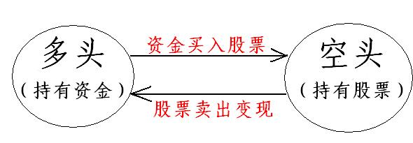
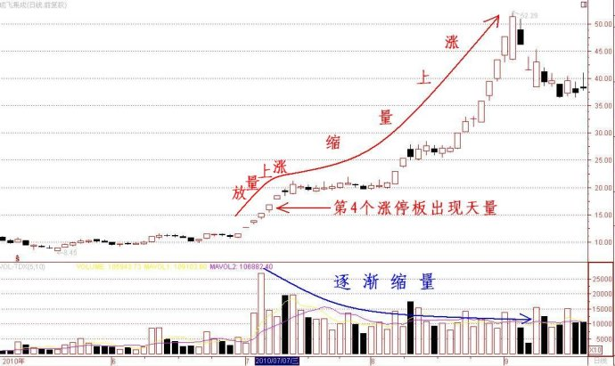
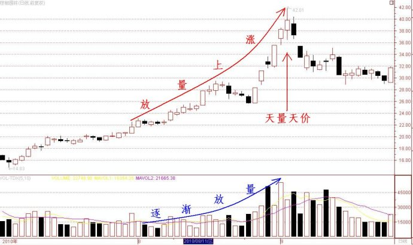
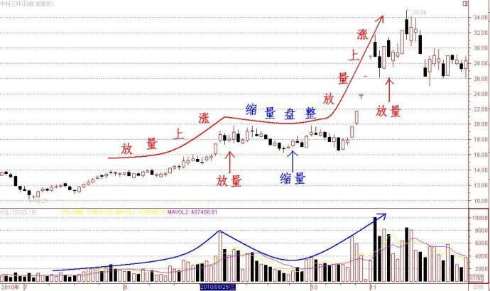

第106篇•教你炒股系列20：关于放量上涨与缩量上涨的问题（3）
谷为陵
从投资者个体来看，市场永远存在两类相互对立的投资者：买入者和卖出者，或者说多头和空头。多头是资金持有者，而空头就是股票持有者。股票市场的所有交易，就是多空双方的股票和资金的不断转化。股市的复杂和多变在于，从整个市场的层面来说，多空双方并非截然对立的，而是随时相互转换的。当多头将资金买成股票后，他就由资金持有者变为了股票持有者，成为了潜在空头；而空头将股票卖出变现后，他就由股票持有者变为了资金持有者，而成为了潜在多头。多空双方的转换关系如下图所示：

我在上一篇博文中提出，决定股价涨跌的是买方，而决定是否成交的是卖方。那么，决定一只股票成交量大小的是哪一方呢？从根本上来说，应该是卖方，若卖方不卖出股票，或者惜售，则难有成交量放出。我们可以举一个极端的例子加以说明。比如，一只股票在涨停板上封上了巨量，此时，买方的买入意愿极其强烈，但若卖方惜售，那么，在涨停板上的成交量就会很少，甚至没有成交；若卖方坚决卖出，那么，在涨停板上的成交量就会很大，甚至换手率可以高达50%以上。再如，在新股上市首日，因卖方积极抛售，新股首日换手率最高可达95%！所以，股票的放量，首先是空头大肆抛售，其次才是多头全部接盘的结果。
对于某一只特定的股票来说，多头和空头都来源于两个方面：多头是来自新多和空翻多，而空头是来自套牢盘和获利盘（多翻空）。所谓新多，是指新增的买入者，带来的是新增的资金。所谓空翻多，是指原先的空头在将某只股票卖出变现后，发现卖错了又重新买进该股，带来的是存量的资金。
我们常说的放量上涨和缩量上涨，只是一种笼统的说法，其中有很多细节问题需要搞清楚。
总体来说，放量上涨有三种形式：
其一，是短暂放量，出现“先放量、后缩量”的情况，如某只股票在某一天或者某几天的大涨时放出巨量，其后成交量会逐渐减少，而形成缩量上涨的态势。如，因突发性利好而出现连续涨停板的股票，往往会在第三个或者第四个涨停板出现一次天量，随后股价仍会继续大涨，但成交量却逐渐降低，形成缩量上涨。如，成飞集成在2010年7月至9月的暴涨走势：

之所以出现“先放量、后缩量”的情况，是因为这类股票均为题材股，其题材很难定量估值，这就造成多空分歧巨大：空头坚决卖出，而多头坚决买进，形成多空大战而放出天量。但我前面说过，决定股价上涨的最终力量是多头，在空头将几乎所有筹码抛空后，待多头继续大举买进时，发现股票的抛盘减少了很多，即使股价继续暴涨，因空头衰竭，再也放不出巨量来了。在第三个或者第四个涨停板易于出现天量，其原因是在该价位，多头会受到套牢盘和短线获利盘的双重打压，抛压最沉重，一旦冲过这个区域，套牢盘基本上就被消灭了，只剩下获利盘，卖压减少一半，于是成交量出现逐渐萎缩之势。
其二，是持续放量，成交量越来越大，直至股价见顶时达到天量，出现所谓“天量天价”。如，2010年7月至9月棕榈园林的走势图：

之所以出现持续放量，直至“天量天价”，是因为这类股票一般属于绩优成长股，或者是“绩优+高送股”股。但股价在启动之初，该类股票并未公告好业绩或者高送股的信息，只是内幕人士或者庄家提前知道消息而在持续买进，造成股价不温不火连续上涨，成交量平稳或者逐渐放大。直至公司公告业绩暴增以及高送股的大利好后，市场人气才被陡然点燃，买盘汹涌，股价暴涨，而此时那些“先知先觉”的低位买进者，正好投市场所好，大肆卖出，形成股价在最高位大出货的局面。
三是间歇式放量，出现“先放量、后缩量、再放量”的情况。如，2010年7月至11月中科三环的走势图：

之所以出现“先放量、后缩量、再放量”的情况，是因为这类股票往往具有很大的炒作题材，股价会出现两波以上的主升浪。在其第一波主升浪时，市场还未充分认识到其题材价值，第一轮主升浪主要是主力操作的结果，基本上是主力的吸货阶段。第一波主升浪放量的位置，就是主力将主要卖盘强力吃掉的位置。在消灭掉主要卖盘后，主力就让股价自由振荡一段时间，以清洗最后的浮筹，在此阶段，成交量是逐渐萎缩的，但由于主力不出货并适当护盘，股价也掉不下来。待到时机成熟，该股的题材被市场广泛认同，那么，主力会发动第二波主升浪，在这轮主升浪的最高点附近，主力会大举出货，从而出现另一个“天量天价”。
以上就是放量上涨的三种形式及其本质。
（未完待续）